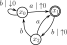
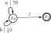
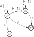
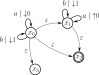

Stack Automata
You know what's better than a counter?
A stack!
We have been on the hunt since last lecture to find a way to beef up finite automata to obtain a type of finite automaton that can accept context-free languages.
Again, the reason was algorithmic: automata offer us algorithms for determining membership in a language, which is something a grammar cannot offer.
It turns out that the right addition to our finite automata is a stack.
They are not strictly necessary, but silent transitions also make things quite a bit easier.
Before we get to the definition of stack automaton, we need to have a solid computational understanding of stacks, as we will use them.
Stack Programs
Now, the type of stack we need is slightly different than the stacks you know and love: our stacks will have the usual push operation, but the pop operation is going to be a bit more like a pop-and-check.
Let's get a bit more formal about this: we need to define a simple programming language, which we will call \(\mathtt{Stk}\).
We need to fix a set ahead of time, the set \(\Sigma\) of stack symbols (\(\Sigma\) is Greek symbol corresponding to "S"), which are the items we can push and pop on our stack.
The programs of \(\mathtt{Stk}\) are built from the grammar
\[
\mathtt{Stk} \longrightarrow \mathtt{skip} \mid \mathtt{push}~\sigma \mid \mathtt{pop}~\sigma \mid \mathtt{Stk}{.}\mathtt{Stk}
\]
where \(\sigma\) is any stack symbol \(\sigma \in \Sigma\), although we won't always use this notation (see below).
Now that we have the syntax of the \(\mathtt{Stk}\) language, let's define what its programs actually do.
For us, a stack is just list of stack symbols \(S = [\sigma_1, \dots, \sigma_n]\) where we understand \(\sigma_n\) to be at the top of the stack (think about how you implemented the stack data structure in prior courses).
The current contents of the stack determines the memory state.
We run a \(\mathtt{Stk}\) program on a stack \(S\) as follows: let \(S = [\sigma_1, \dots, \sigma_n]\), then
- after running \(S{.}\mathtt{skip}\), we have \(S = [\sigma_1, \dots, \sigma_n]\)
- after running \(S{.}\mathtt{push}~\tau\), we have \(S = [\sigma_1, \dots, \sigma_n, \tau]\)
- after running \(S{.}\mathtt{pop}~\tau\), one of two things occurs:
- If \(n > 0\) and \(\tau = \sigma_n\), then we have \(S = [\sigma_1, \dots, \sigma_{n-1}]\).
- Otherwise, the program crashes.
- running \(S{.}p{.}q\) for some \(p,q \in \mathtt{Stk}\) is the same as running \(S{.}p\) and then \(S{.}q\) after.
("First time?"")
Let \(S = [~]\) be an empty stack and let \(p\) be the stack program
\[\begin{aligned}
p =
\mathtt{skip}{.}
\mathtt{push}~0{.}
\mathtt{skip}{.}
\mathtt{push}~1{.}
\mathtt{pop}~1{.}
\mathtt{push}~0{.}
\mathtt{skip}{.}
\mathtt{skip}{.}
\mathtt{pop}~0{.}
\mathtt{skip}{.}
\mathtt{pop}~0{.}
\mathtt{skip}
\end{aligned}\]
What is the result of running \(S{.}p\)?
(Push-Pop)
Show that for any stack program \(p\), the following equations hold
\[
\mathtt{push}~\sigma{.}\mathtt{pop}~\sigma = \mathtt{skip}
\qquad
p{.}\mathtt{skip} = p
\qquad
\mathtt{skip}{.}p = p
\]
in the sense that the left-hand sides of the equations are programs that affect every stack \(S\) in the same way as the right-hand side programs.
Valid Stack Programs
We won't formally require it in definitions, but for practicality's sake, the only stack programs we are going to employ are the valid ones.
That is, we want to exclude the stack programs that are fated to crash no matter the stack on which they are run.
There are different characterizations of this phenomenon: for example, one way to show that a stack program is valid is to produce a stack \(S\) such that \(S{.}p\) doesn't crash.
But every stack can be obtained from the empty stack, i.e., obtained by running \([~].q\) for some \(q\) (for example, \(q\) can be the program that pushes the items of \(S\) to \([~]\) in order).
And every stack can be emptied, i.e., we can obtain \([~]\) from \(S{.}r\) for some \(r \in \mathtt{Stk}\).
This allows us to give a purely equational characterization of valid stack programs.
(Valid Stack Program)
Let \(p \in \mathtt{Stk}\) be a stack program.
We say that \(p\) is valid if there exist stack programs \(q,r \in \mathtt{Stk}\) such that \(q{.}p{.}r = \mathtt{skip}\).
(That's SO Valid)
Show that the following stack programs are valid:
- \(\mathtt{pop}~1\)
- \(\mathtt{pop}~1{.}\mathtt{push}~0\)
-
\(
\mathtt{pop}~0{.}
\mathtt{pop}~0{.}
\mathtt{skip}{.}
\mathtt{push}~0{.}
\)
Give an example of a stack program that is
not valid.
(Pop-Push)
By induction on the length of the program, prove that every valid stack program is equivalent to either \(\mathtt{skip}\) or a program of the following form:
\[
\mathtt{pop}~\sigma_1 {.}
\mathtt{pop}~\sigma_2 \dots
\mathtt{pop}~\sigma_n {.}
\mathtt{push}~\tau_1 {.}
\mathtt{push}~\tau_2 \dots
\mathtt{push}~\tau_m
\qquad \text{(*)}
\]
for some \(n,m \in \mathbb N\).
The induction proof looks like this: in your base case (stack programs of length 1!), you want to show that \(\mathtt{skip}\), \(\mathtt{push}~\sigma\), and \(\mathtt{pop}~\sigma\) are valid and of the form (*).
For an induction hypothesis, assume that every valid stack program of length \(k\) is equivalent to one of the form (*).
The induction step now consists of three cases: you need to show that if \(\mathtt{skip}{.}p\) is a valid stack program of length \(k + 1\), then \(\mathtt{skip}{.}p\) is equivalent to one of the form (*), (2) if \(\mathtt{push}~\sigma{.}p\) is a valid stack program of length \(k + 1\), then \(\mathtt{push}~\sigma{.}p\) is equivalent to one of the form (*), and (3) the same statement for \(\mathtt{pop}~\sigma.p\).
Stack Automata
Now that we have a good understanding of stacks, let's strap one to an automaton.
(Stack Automaton)
Let \(A\) be an alphabet of input symbols.
We also need to fix a set \(\Sigma\) of stack symbols.
Given these two pieces of data, a
stack automaton \(\mathcal S = (Q, A, \Sigma, \delta, F)\) consists of
- A set \(Q\) of program states
- A transition relation
\[
\delta \subseteq Q \times \big( (A \cup \{\varepsilon\}) \times \mathtt{Stk} \big) \times Q
\]
- A set \(F\) of accepting program states.
Where \(\xi \in A \cup \{\varepsilon\}\), if \((x, (\xi, p), y) \in \delta\), then we write \(x\xrightarrow{\xi \mid p} y\) and call it a
\(\xi\)-transition.
If \(\xi = \varepsilon\), then \(x\xrightarrow{\xi \mid p} y\) may also be called a
silent transition and written \(x \stackrel{p}{\leadsto} y\).
Given a program state \(x_0 \in Q\), a
run of \(\mathcal S\) starting from \(x\) is a path of program-memory state pairs
\[
(x_0, S_0) \xrightarrow{\xi_1\mid p_1} (x_1, S_1) \xrightarrow{\xi_2 \mid p_2} \cdots \xrightarrow{\xi_n \mid p_n} (x_n, S_n)
\]
that satisfies the following additional conditions:
-
The path below exists in \(\mathcal S\):
\[
x_0 \xrightarrow{\xi_1\mid p_1} x_1 \xrightarrow{\xi_2 \mid p_2} \cdots \xrightarrow{\xi_n \mid p_n} x_n
\]
- \(S_0 = [~]\) is the empty stack.
- For each \(0 < i \le n\), \(S_{i}\) is the stack obtained from running \(S_{i-1}{.}p_i\)
The last condition implicitly requires that \(S_0{.}p_1\dots p_n\) does not crash.
We call this an
accepting run if additionally,
- \(x_n \in F\)
- \(S_n = [~]\) is the empty stack
in which case we say that
\(x\) accepts the word \(\xi_1\cdots \xi_n\).
Note here that \(\xi_i \in A \cup \{\varepsilon\}\), so some of the \(\xi_i\) may be the empty word.
Note! Because of the Pop-Push (not to be confused with the Push-Pop exercise) problem, we are going to write
- \({\downarrow}\sigma\) for any program \(p\) equivalent to \(\mathtt{push}~\sigma\)
- \({\uparrow}\sigma\) for any program \(p\) equivalent to \(\mathtt{pop}~\sigma\)
- \({\uparrow}\sigma_1{\downarrow}\sigma_2\) for any program \(p\) equivalent to \(\mathtt{pop}~\sigma_1.\mathtt{push}~\sigma_2\)
Transitions where the stack program is equivalent to \(\mathtt{skip}\) are labelled with only their input letter.
This is going to be extremely useful notation going forward.
(First Time)
Consider the stack automaton below.

The stack automaton \(\mathcal S = (Q, A, \Sigma, \delta, F)\), where
\[\begin{aligned}
Q &= \{x_0, x_1, x_2\} \\
A &= \{a, b\} \\
\Sigma &= \{0, 1\} \\
\delta &= \{ \\
&\hspace{2em} (x_0, (b, {\downarrow}0), x_0), \\
&\hspace{2em} (x_0, (a, {\uparrow}0), x_1), \\
&\hspace{2em} (x_1, (b, {\uparrow}0), x_2), \\
&\hspace{2em} (x_2, (b, \mathtt{skip}), x_0), \\
&\hspace{2em} (x_2, (a, \mathtt{skip}), x_1) \\
&\} \\
F&= \{x_1\}
\end{aligned}\]
Recall that in state diagrams of stack automata, we will usually omit the stack program from transitions if they are equivalent to \(\mathtt{skip}\).
In \(\mathcal S\) above, we can read \(bbabba\) from \(x_0\) via the path
\[
x_0
\xrightarrow{b \mid {\downarrow}0} x_0
\xrightarrow{b \mid {\downarrow}0} x_0
\xrightarrow{a \mid {\uparrow}0} x_1
\xrightarrow{b \mid {\uparrow}0} x_2
\xrightarrow{b} x_0
\xrightarrow{b \mid {\downarrow}0} x_0
\xrightarrow{a \mid {\uparrow}0} x_1
\]
This path corresponds to a run of the stack automaton: the program that is run as the transitions are traversed is
\[
{\downarrow}0{.}
{\downarrow}0{.}
{\uparrow}0{.}
{\uparrow}0{.}
\mathtt{skip}{.}
{\downarrow}0{.}
{\uparrow}0
\]
or in our more verbose notation,
\[
\mathtt{push}~0{.}
\mathtt{push}~0{.}
\mathtt{pop}~0{.}
\mathtt{pop}~0{.}
\mathtt{skip}{.}
\mathtt{push}~0{.}
\mathtt{pop}~0
\]
In fact, this run is an
accepting run.
One of the conditions is clearly met, because the run ends at the state \(x_1\) and \(x_1 \in F\).
To see that the other condition is met, we can either draw the memory state changes, or we can simplify the \(\mathtt{Stk}\) program.
The first way is something you can verify by drawing the corresponding diagrams.
We're going to go with the second method here, since it's a bit more computational.
We basically just need the equations in the Push-Pop individual exercise.
Using these, we can reason as follows: we identify consecutive push-pop pairs, turn them into skips, and then remove unnecessary skips.
For our program, this results in
\[\begin{aligned}
&\mathtt{push}~0 {.} {\color{blue}(\mathtt{push}~0{.} \mathtt{pop}~0)} {.} \mathtt{pop}~0 {.} \mathtt{skip} {.} \mathtt{push}~0 {.} \mathtt{pop}~0 \\
&= \mathtt{push}~0 {.} {\color{blue}(\mathtt{skip})} {.} \mathtt{pop}~0 {.} \mathtt{skip} {.} \mathtt{push}~0 {.} \mathtt{pop}~0 \\
&= {\color{blue}(\mathtt{push}~0 {.} \mathtt{pop}~0)} {.} \mathtt{skip} {.} \mathtt{push}~0 {.} \mathtt{pop}~0 \\
&= {\color{blue}(\mathtt{skip})} {.} \mathtt{skip} {.} \mathtt{push}~0 {.} \mathtt{pop}~0 \\
&= {\color{blue}(\mathtt{skip})} {.} \mathtt{push}~0 {.} \mathtt{pop}~0 \\
&= {\color{blue}(\mathtt{push}~0 {.} \mathtt{pop}~0)} \\
&= \mathtt{skip} \\
\end{aligned}\]
This calculation tells us that the program (1) does not crash, and (2) that the memory state at the end of the program is an empty stack.
This is a proof that the second requirement of being an accepting run is met.
In the example, we did the calculation with the program written in verbose form, but the same calculation could have been done with \(\downarrow\)s and \(\uparrow\)s.
(Stacked ABs)
For each of the following words, determine whether they are accepted or rejected by the variable \(x_0\) in the stack automaton in the example.
To argue one way or the other, write out the program that corresponds to reading the word in the automaton (starting from \(x_0\)) and simplify using a calculation like in the example.
- \(ba\)
- \(bbabba\)
- \(bbbababba\)
One way to understand the stack operations in a stack automaton can be framed in terms of obligations: when a transition in a run pushes a symbol \(\sigma\) to the stack, it is is now obliged to pop \(\sigma\) from the stack later.
The later a symbol gets popped to the stack, the higher the priority of that obligation.
(Familiar Faces)
For each stack automaton below, starting from \(x_0\),
- write down a path through the automaton that does not correspond to a run,
- write down a path through the automaton that corresponds to a run, ends with an accepting state, but is not an accepting run,
- write down a path through the automaton that corresponds to a run, in which the stack begins and ends empty, but is not an accepting run, and
- write down a few words in the language accepted by \(x_0\).

\(\mathcal S_1\)

\(\mathcal S_2\)

\(\mathcal S_3\)
It's easier to state theorems when you have some formal definitions to work with, so let's introduce some terminology around stack automata and their languages.
(Stack Recognizable)
A language \(L \subseteq A^*\) is stack recognizable language if there is a finite stack automaton \(\mathcal S = (Q, A, \Sigma, \delta, F)\) (finite here means \(Q\) is finite) with a state \(x \in Q\) such that
\[
L = \mathcal L(\mathcal S, x)
\]
The family of stack recognizable languages is \(\mathsf{Stack}\).
It turns out that we will not be using this terminology for long.
Remember that our goal is to design a type of automaton for deciding whether a word is in a context-free language.
Indeed, the next two lectures are about showing that \(\mathsf{Stack} = \mathsf{CFL}\).
Before we formally prove this equality, it could be enlightening to show that some familiar context-free languages are also stack recognizable.
(Stack Party)
For each of the languages \(L_i\) below, show that \(L_i \in \mathsf{Stack}\).
That is, design a stack automaton \(\mathcal S = (Q, A, \Sigma, \delta, F)\) with a state \(x\in Q\) such that \(L_i = \mathcal L(\mathcal S, x)\).
- \(L_1 = \{a^n b a^n \mid n \in \mathcal L\}\)
- \(L_2 = \{a^n b^{2n + 1} \mid n \in \mathcal L\}\)
- \(L_3 = \{w \mid w \text{ has the same \(\#\) of \(a\)s and \(b\)s }\}\)
- \(L_4 = \{a^ib^jc^k \mid i \neq j \text{ or } j \neq k\}\)
(2 is better than 1)
Consider the language
\[
L = \{w \mid w = w^{\text{op}}\}
\]
in the alphabet \(A = \{a, b, c\}\).
Design a stack automaton \(\mathcal S = (Q, A, \Sigma, \delta, F)\) with a state \(x\in Q\) such that \(L = \mathcal L(\mathcal S, x)\).
One benefit of distinguishing between \(\mathsf{Stack}\) and \(\mathsf{CFL}\) for now is that it is a bit easier to connect the previous lecture to stacks.
(Compared to Counting)
Let \(\mathcal A = (Q, A, \delta, F)\) be a counter automaton.
Note that in particular, we have
\[
\delta \subseteq Q \times (A \times \{{+}1, {+}0, {-}1\}) \times Q
\]
Find a set of stack symbols \(\Sigma\) and a stack automaton \(\mathcal S = (Q, A, \Sigma, \delta', F)\) such that for any \(x \in Q\), \(\mathcal L(\mathcal A, x) = \mathcal L(\mathcal S, x)\).
Can this also be done with two-counter automata?